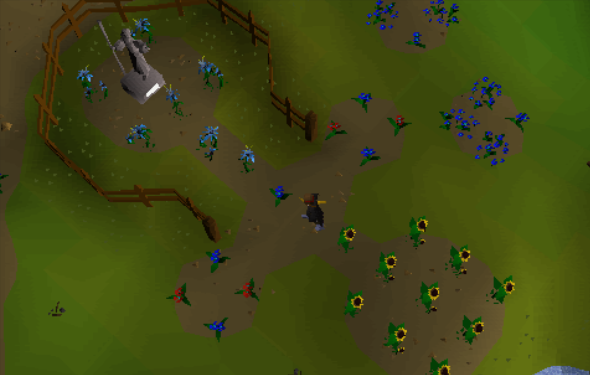

Pirate's Treasure
Description: Redbeard Frank knows where secret pirate treasure is hidden, it may require some work to persuade him to let you know where though.Difficulty: Novice
Length: Medium
Items & Skills Needed:
Reward: 2 Quest points, 450 coins, a cut Emerald, a Gold Ring
Instructions:
Talk to Redbeard the pirate. He will tell you about the treasure. Say that you want to get it. He will ask you to bring him some rum.
Travel to Karamja and get out of the ship. Go to the wine shop and buy some rum, which costs 30 coins.
Now talk to Luthas in the house northeast of this shop. Talk to him and say that you want to help. He will give you a job.
Go to the banana field west of this house. Pick 10 bananas and go east. You will see a crate. Use some (not all) of the bananas in the crate, then use the rum on the crate. The rum is now inside. Put the remaining bananas in the crate until it's full. After it's full, talk to Luthas, and he will award you 30 coins.
Travel back to Port Sarim and walk west. You will see a man called Wyndin who owns a food shop. If you have the white apron now, wear it. If you don't, go to the clothes shop in Varrock to buy one.
Talk to Wyndin and ask him to hire you, if you are wearing the apron, he will hire you.
Search all the crates in the shop. One of them contains bananas and a rum, take the rum out.
Talk to Redbeard, and he will be pleased and give you a key. He will say that a chest in Varrock contains the treasure.
Go to Varrock and go inside the Blue Moon Inn which is South the general store. Go up to the 2nd floor and go into the west room. Find a chest then use the key on the chest. You will get a note. Read it, and it will tell you that the treasure is in Falador Park.

Now it's time to dig the treasure. Go into the park and find a statue. West of it there are some sun flowers. If you have the spade, you can dig the flowers. If you don't, walk over to the house near the furnace in Falador to find one. If you dig the flowers, the gardener will attack you. Kill him and dig again.
You will get 450 coins, a gold ring, and an emerald, which are the rewards for completing the quest. The quest is now finished.
Congratulations, Quest Complete!

This quest guide was written on RuneHQ by Henry-x. Thanks to Evadek and Weezy for corrections.
This quest guide was entered into the database on Sat, Feb 07, 2004, at 09:10:19 PM by Chownuggs and was last updated on Wed, Mar 31, 2004, at 05:14:06 PM.